- الجوف
- 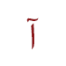الألف المدية
- الواو المدية
 الياء المدية
الياء المدية- الحلق
- الهمزة
- الهاء
- العين
- الحاء
- 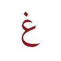الغين
- 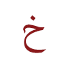الخاء
- السان
- 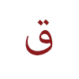القاف
- 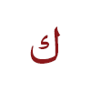الكاف
- 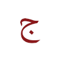الجيم
- الشين
- الياء غير المدية
- الضاء
- 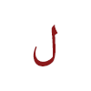اللام
 النون
النون الرّاء المرققة
الرّاء المرققة- الرّاء المفخمة
- 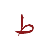الطّاء
- الدّال
- التّاء
- الصّاد
- السّين
- 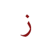الزّاي
- 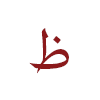الظّاء
- 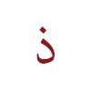الذّال
- الثّاء
- الشفتان
- 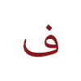الفاء
- الواو
- 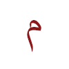الميم
- 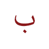الباء
- الخيشوم
- النون
 الميم
الميم
Sponsored by Qasid Arabic Institute
About the Institute
The word qasid is used to describe a path that is direct and smooth. This is the way we believe the Arabic language should be taught. The Qasid Institute for Arabic has quietly developed a reputation as one of the leading centers in the Middle East for Arabic language learning. A comprehensive curriculum taught over five distinct levels takes a student from the proper pronunciation of letters to a level of mastery.
Graduating students who have applied themselves will find that understanding an all-Arabic university course to be within reach, and translating general texts to be manageable. Our graduate-level modules prepare advanced students to teach Arabic and Middle East Studies, something that a number of our alumni now do at universities throughout the US and Europe. To indicate something about its level of rigor, Qasid’s Summer Intensive Program (SIP) has a higher percentage of Ivy League students vis a vis the rest of its student body than any other private Arabic language institute in the Middle East.
The term qasid is also used to describe an individual who strives forward with a direct, specific intention, which is a dictionary-perfect definition for the kind of student that Qasid attracts. Although designed mainly for university-level students and time-starved professionals, Qasid students have come as young as 15 and as old as 65. Our students include consulate officers, Fulbright researchers, full-time mothers, medical doctors, FLAS recipients, and Ivy League graduates, and hail from nearly two dozen countries.
An Ideal Location
Many scholars of Arabic have noted that the Jordanian dialect is among the closest to Classical Arabic (fusha), making Amman an ideal setting for learning-or perfecting-one’s Arabic. An inherent shortcoming of university-based Arabic instruction is the lack of daily, out-of-classroom practice. Language learning requires practice-and lots of it. For this reason, regardless of how many years of formal study a student has had, a several-month immersion in an Arabic-rich setting is critical for intermediate/advanced mastery of the language.
At the same time, English is a second language for many residents of Amman, meaning that in dealings with cab drivers, shopkeepers, and others, beginners have a support ready, in case words from a particular lesson slip their minds. Jordan has a rich Arab and Islamic heritage, and the natural hospitality of the Jordanian people will be the source of many endearing memories.
Facilities
Our campus is housed in an 8,000 square foot facility on University Street in the Sport City district of Amman. Classes are conducted in classrooms each bearing the name of one of the historically-significant centers of learning in Islamic history (Cairo, Istanbul, Baghdad, Damascus, etc.), and feature custom-made wood tables in U and L configurations to foster discussion. Complimentary wi-fi extends to every classroom, a book store and copy center serves students and staff alike, and a spacious conference hall accommodates seminars and presentations delivered by special-invite guests. Within easy reach are numerous malls and shopping outlets, art and cultural centers, sports and gym facilities, and bookstores. It is an optimal locale for those desiring to immerse themselves in the active hustle and bustle of one of the most dynamic capital cities in the Arab world.